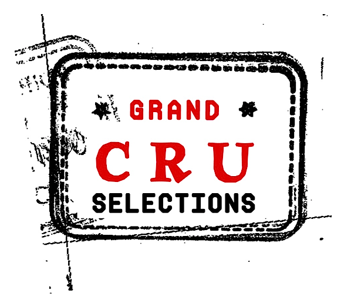

<!DOCTYPE html>
<html>
<head>
<meta charset="utf-8">
<title>Grand Cru Selections|Domaine de Cassiopée</title>
<meta name="viewport" content="initial-scale=1,maximum-scale=1,user-scalable=no">
<link href="https://api.mapbox.com/mapbox-gl-js/v2.8.2/mapbox-gl.css" rel="stylesheet">
<script src="https://api.mapbox.com/mapbox-gl-js/v2.8.2/mapbox-gl.js"></script>
<style>
body { margin: 0; padding: 0; }
#map { position: absolute; top: 0; bottom: 0; width: 100%; }
</style>
</head>
<body>
<style>
.mapboxgl-popup {
max-width: 400px;
font: 12px/20px 'Helvetica Neue', Arial, Helvetica, sans-serif;
}
</style>
<div id="map"></div>
<script>
	mapboxgl.accessToken = 'pk.eyJ1IjoiZ3JhbmRjcnVjYXJ0b2dyYXBoeSIsImEiOiJja3djenY4bDIwamloMnFsaDBldjZldnkxIn0.mlixoOWZxgLg4s1Us6iLMg';
// Create a new map.
const map = new mapboxgl.Map({
container: 'map',
style: 'mapbox://styles/grandcrucartography/ckza6gjax000014mucwxap3kw',
center: [4.653971202924504,46.9042772763175],
zoom: 12
});
 
map.on('load', () => {
// Add a source for the state polygons.
map.addSource('states', {
'type': 'geojson',
'data': 'lieuxdits.geojson'
});
 
// Add a layer showing the state polygons.
map.addLayer({
'id': 'states-layer',
'type': 'fill',
'source': 'states',
'paint': {
'fill-color': 'rgba(200, 100, 240, 0.0)',
'fill-outline-color': 'rgba(200, 100, 240, 0)'
}
});
 
// When a click event occurs on a feature in the states layer,
// open a popup at the location of the click, with description
// HTML from the click event's properties.
map.on('click', 'states-layer', (e) => {
new mapboxgl.Popup()
.setLngLat(e.lngLat)
.setHTML(
'' +
                        '<h2> Lieu Dit</h2>' + e.features[0].properties.Lieudit + '<h4> Varietal</h4>' + e.features[0].properties.Varietal)


.addTo(map);
});
 
// Change the cursor to a pointer when
// the mouse is over the states layer.
map.on('mouseenter', 'states-layer', () => {
map.getCanvas().style.cursor = 'pointer';
});
 
// Change the cursor back to a pointer
// when it leaves the states layer.
map.on('mouseleave', 'states-layer', () => {
map.getCanvas().style.cursor = '';
});
});

map.on('load', () => {
// Add a source for the state polygons.
map.addSource('poipolygon', {
'type': 'geojson',
'data': 'poipolygon.geojson'
});
 
// Add a layer showing the state polygons.
map.addLayer({
'id': 'poipolygon-layer',
'type': 'fill',
'source': 'poipolygon',
'paint': {
'fill-color': 'rgba(200, 100, 240, 0.0)',
'fill-outline-color': 'rgba(200, 100, 240, 0)'
}
});
 
// When a click event occurs on a feature in the states layer,
// open a popup at the location of the click, with description
// HTML from the click event's properties.
map.on('click', 'poipolygon-layer', (e) => {
new mapboxgl.Popup()
.setLngLat(e.lngLat)
.setHTML(
'' + '<br> </br>'+
                         e.features[0].properties.Producer + e.features[0].properties.Desc)


.addTo(map);
});
 
// Change the cursor to a pointer when
// the mouse is over the states layer.
map.on('mouseenter', 'poipolygon-layer', () => {
map.getCanvas().style.cursor = 'pointer';
});
 
// Change the cursor back to a pointer
// when it leaves the states layer.
map.on('mouseleave', 'poipolygon-layer', () => {
map.getCanvas().style.cursor = '';
});
});


</script>
 
</body>
</html>
